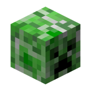

I dove into MLH GHW Cloud Week's challenge with a
pickaxe and a vision! My mission? To build a static
website using HTML and CSS in just one week and challenge
myself to learn some new CSS and HTML tricks along the way.
Naturally, I crafted a Minecraft-themed site,
complete with a gallery of mesmerizing game
screenshots and a sleek slideshow to show them off.

Day 1 was all about brainstorming and sketching my
concept—Figma became my trusty blueprint tool. Over
the next two days, I built a responsive,
Minecraft-inspired interface that looks amazing
whether you’re on mobile, tablet, or desktop.
From there, the adventure continued as I poured
my creativity into xyz (details go here), refining
it day by day. In the end, I had a website that felt
as immersive as the game itself!